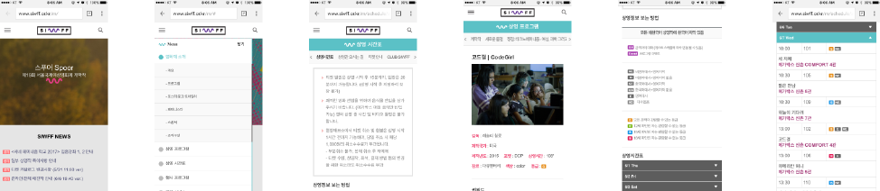
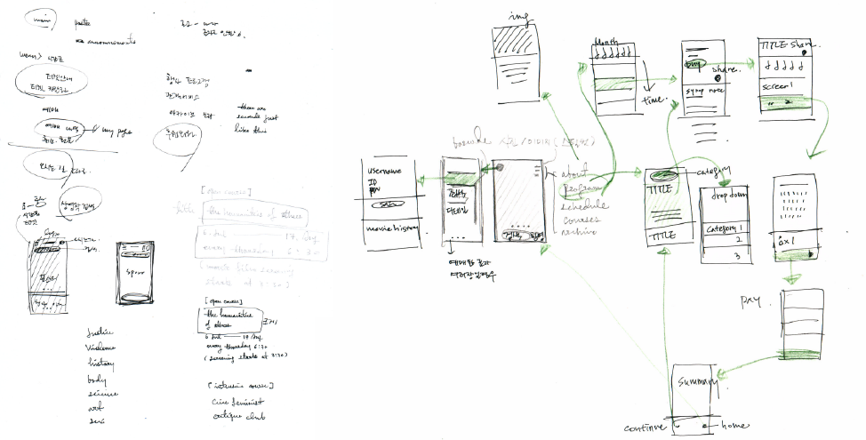
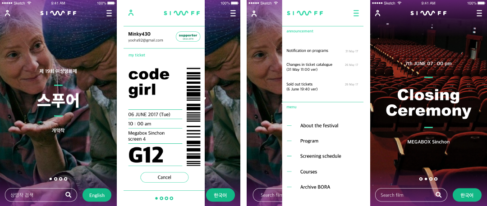
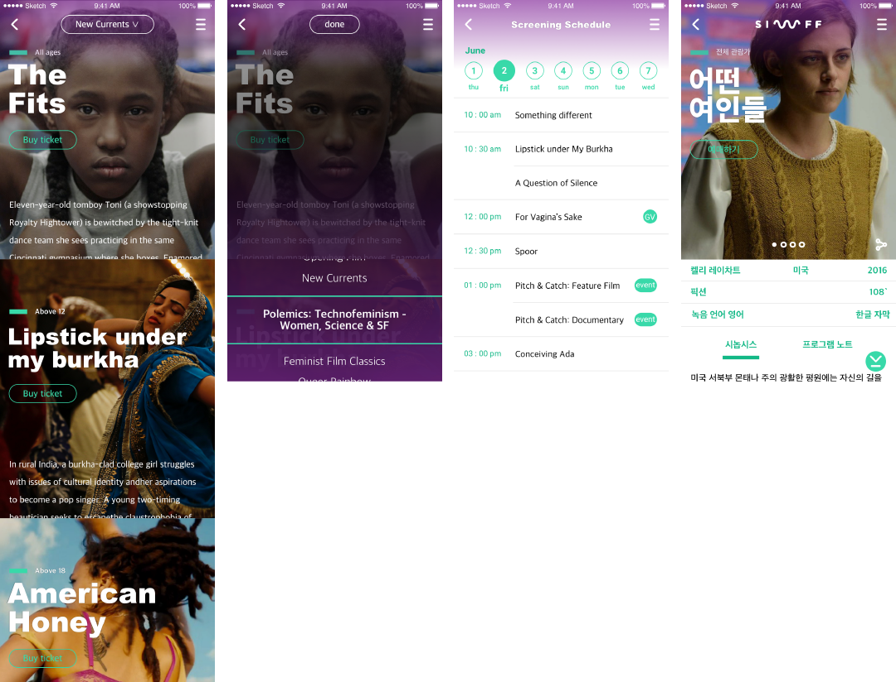
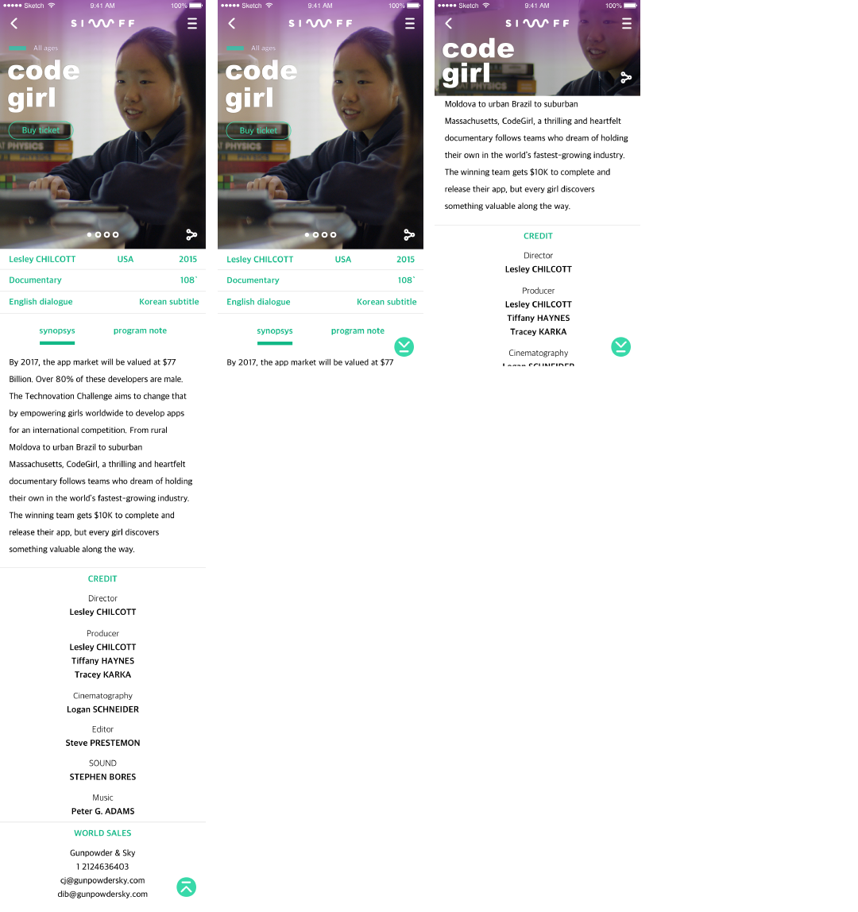
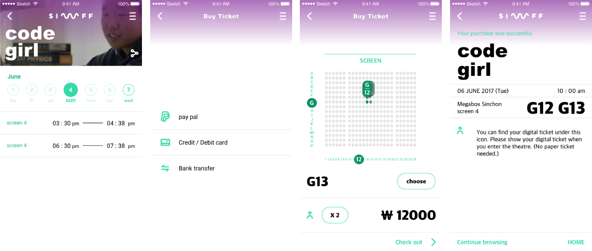
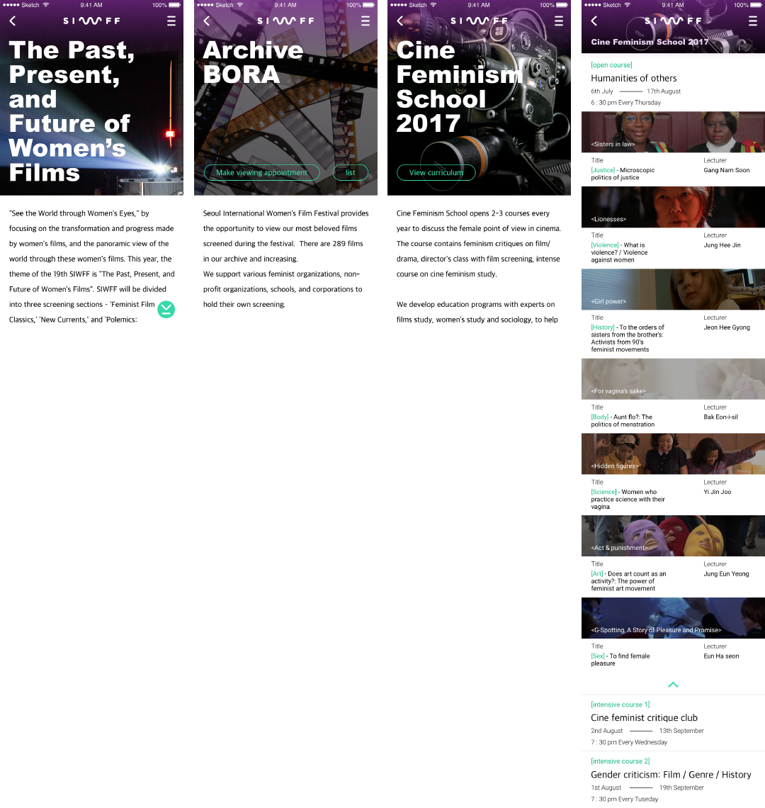

Seoul Internatinal
Women's Film Festival
2017 / UX / UI
SIWFF is a film festival where feminists who love cinematic arts gather once a year to appreciate various films from female directors and films that have a female lead. I have been attending this festival since 2015 and found that their mobile web page is not very easy to use. The major problems I found on the original mobile website are that information is not visually well-organized for users to understand, and the sorting system is not very persuasive. Moreover, although the website belongs to a film festival, the current mobile website seems reluctant to use still images from each film. That’s why I decided to make this into my personal project.
      